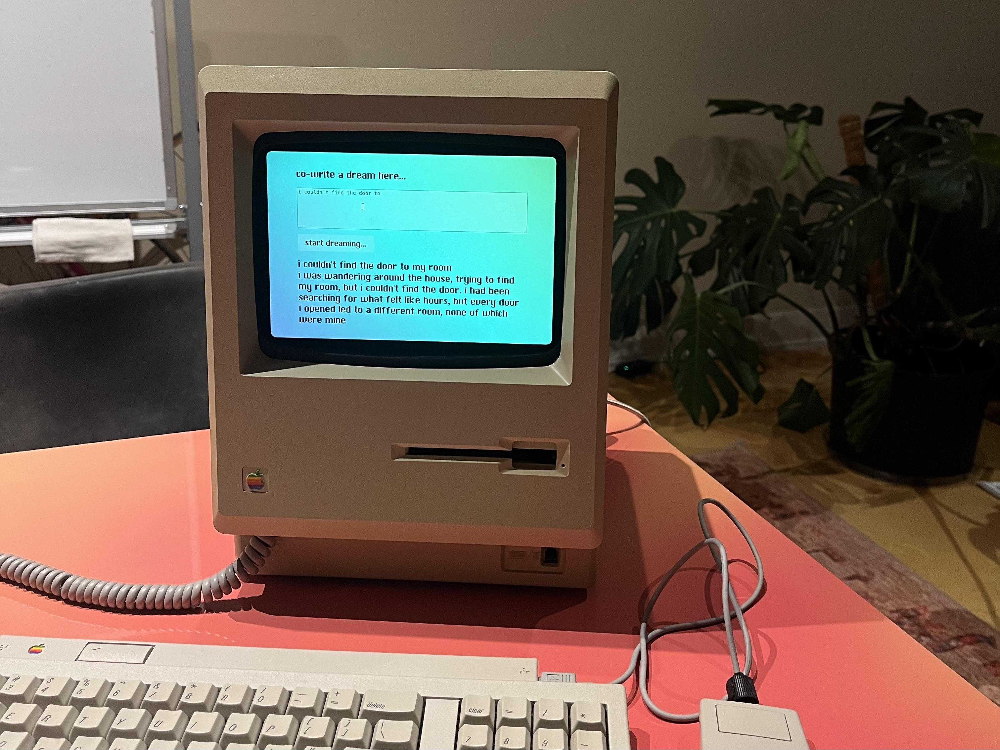
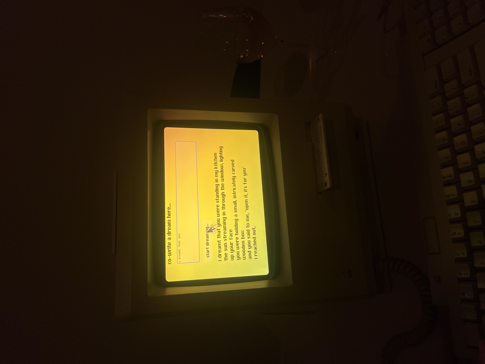
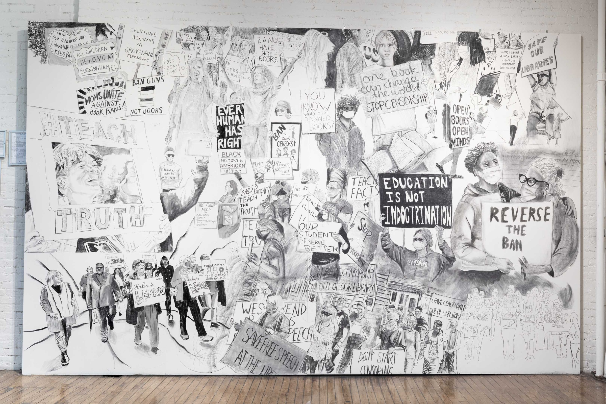
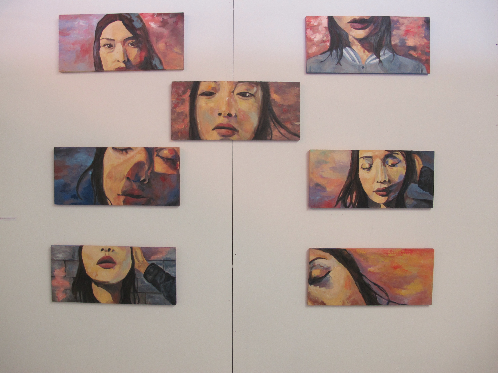

zora che
visuals
a lot of people
entropy
oxytocin
words
oracle in the machine
taking pictures
searching for wonderland
tangibles
packing for an unknown future
dream machine
cocoon
bytes
01
02
research

collaboration with daniel kessler, see more of the macintosh here

dream machine
co-dreaming with a model finetuned on 8 years of my dream diariescollaboration with daniel kessler, see more of the macintosh here
cocoon
i giggle a lot in this recording, bewareinteractive musical cocoon with tempo reactive twisting and lights
built with lev stamblr, hana chitsaz, andy qu
wood, motor, LEDs, curtains, 3D printed and laser cut parts
packing for an unknown future
installation for artist showcase at Gray Areaarduino, wires, foraged and made goods
---
We are all heading towards the future. In different ways we prepare for the shared future consciously and unconsciously. We are packing for an unknown future, where stories of transhumanism and longevity interwine with loss of home and a changing climate
What do we conceive when we think of the future, and how does that influence our current actions?
What kind of future is available to different people?
The suitcases contain stories of these anxieties and hopes for the future, to be further unpacked with a lens of augmented reality
The weather vanes above the suitcases are programmed to move with data streaming of perceptions of the future, via Twitter.

charcoal on wall
a lot of people
collaborative mural for Rirkrit Tiravanija: A LOT OF PEOPLE at MoMA PS1charcoal on wall

private collection
oxytocin
oil on wood, 7 panels of 22 x 10 inchesprivate collection

entropy
acrylic on canvas, 72 x 54 inchesoracle in the machine
kernel issue 4: LUCKwritten by zora che, edited by kyle barnes, art by tiffany wang
---
"Think of the computer, not as a tool, but as a medium."
—Brenda Laurel, Computers as Theatre
If you are reading this, this is for you.
My finger makes gentle contact with the glass matrix, caressing ceramic nano crystals and giving up heat to the obsidian screen. My phone, an inanimate 6 oz. piece of matter (the same weight as a deck of cards), is whispering soft nothings to me.
My face is enveloped by a soft glow as I attentively await my reading. “Tonight,” a smooth voice whispers, “we have the queen of cups... complete unison and harmony with this universe.”
I have been keeping quiet about my nighttime divination; private in my own room, yet aware of the publicity of the readings I receive—the videos are filled with strangers’ comments and reactions. The readings are for me, and for an indeterminate number of us. I scroll down the infinitely extending screen to unravel more stories for myself, until my eyes are heavy and I drift off.
During the day, I pry open models, reverse-engineering their inner workings and meditate on their societal ramifications. At night, I scry with opaque models, heart yearning for answers, fingers absorbed. I receive group tarot readings on Instagram, from someone with a beaming smile soaked in sun rays. The tellers are charismatic, the readings emphatic. One-in-four young women in the United States uses Co-Star, the AI astrology app―I am one of them. I code models, and I let models recode me.
...[read on kernel]
searching for wonderland
---
There is a special type of guilt. The one that haunts you while you savor something beautiful, because you know that you are an intruder. I felt that guilt when I stepped onto the land of a small fishing town called Burano on an early February morning. The chill Adriatic Sea air brushed against my face. I was wide awake, but the town was deep asleep.
If you search Burano on the Internet, you’d get back results with idyllic colors that jump out to you from every small venetian house. Shades of chirpy apple green, meditative dusty rose, warm burnt sienna, and more rich blocks of colors occupy your vision everywhere you look. As I stood there appreciating the saturated colors against the pale, dreadful Italian winter, I felt both delighted and a little blue.
Legends claim that the fishermen painted their houses in vibrant hues in order to find their way home through the heavy fog. This is the story that most tourist websites would tell you. But if there is anything I’ve learned about Burano or the Venetian commune in general, it is that you cannot reduce places into simple postcards.
Burano resides 6 kilometers outside of the main Venice island in the Northern Lagoon. On one hand, Burano is big with over fifty square kilometers of total area. But it is also small, with the dryland occupying 1.1% of the area (around half of one square kilometer). The geography of Burano is the key to understand its temperament; It’s a remote town that lives and breathes the lagoon. Originally, the Venice lagoon was a delta region, which was wetland formed through rivers emptying water and depositing sediments when joining into another body of water. After continuous interactions between the Adriatic Sea and the two rivers Sile and Brenta, sediments were redistributed and built up in places where the sea ground was sloped and the water was shallow, thus forming beaches and islands. The dreamy scene of cities on water is a result of centuries of complex human interventions. Since the Roman period, settlers drained areas of the lagoon, diverted water through canals, and maintained the islands. Far from a natural landscape, Venetian islands like Burano are intimately affected by both the dynamic changes in the natural environment and the human engineering designed to combat the transitions. In fact, due to the operations over the last seven centuries, the lagoon has changed drastically: the natural balance of “river delta” and “sea lagoon” matrices are no longer equal, and when rivers meet the ocean, it directly goes into a “morphological substratum” of the sea and the lagoon. Such environmental changes ultimately contribute to many of the issues facing Venetian islands today, such as the high tides that flood islands like Burano.
The unique landscape of Venice earned itself the name of “La Serenissima,” the Serene One. I thought Burano could be the most tranquil island of them all. Colorful houses, small boats parked by the riverway, homey trattorias that only open for a few hours each day—life in Burano seemed like a dream. I wasn’t sure where to go after touching down at this little slice of wonderland. After admiring the beauty for a few seconds, I followed the other tourists as we spread into the narrow roads and bridges that link together the dryland like veins.
It’s hard not to be intrigued by Burano’s aura of separation, which is deeply ingrained in its history. There is no definite account of how the town was founded, but many claimed that their ancestors sought refuge after abandoning other islands in the lagoon that were eroded by the salt, water, and sun. From fishermen of sinking islands, to nuns seeking political and religious asylum, the island gathered a tough crowd of poors who learned to survive off the lagoon. Unlike most islands in the Venetian commune, life in Burano was plagued with poverty until the 1950s, and the island was stereotyped as a place of paupers. Even after Venice’s annexation of Burano in 1923, little attention was paid to this small Northern island. The otherworldliness of Burano stems from this isolation, and it charms tourists who wish to peek into an island with long-lasting traditions that are uninfluenced by the modern world.
I kept my steps low as I walk past houses with colors of the rainbow. Instead of parking lots for cars, Buranellis have river space for boats. Seeing the nets and the boats, I wondered how hard it is to be independent fishermen in this age. The fish on my dinner table more often than not came from mass farms that even force salmons to eat corn. It turned out that my intuition wasn’t wrong. There were around 400 fishermen when I visited, but in 1980s the number was in the 700s. Externally, Burano’s fishermen are competing with large fishing corporations that benefit from economies of scale. Internally, they also face the issue of an unsustainable local fishing environment. Fishing is heavily impacted by the changing dynamics of the lagoon, especially vulnerable to pollution and climate change. In a 2006 Sustainability Indicators and Environmental Valuation study on fishing prospects of the Venetian lagoon, researchers determined that the ecosystem “has evolved towards a gradual depletion of fish resources” for the entire lagoon, with the Northern Lagoon having the lowest estimated yields. Factors that contribute to the lowering yields include overfishing, fish species’ vulnerability to the rising sea temperature, and the pollution of the Venetian lagoon. Though overfishing can be curbed through regulatory limits, adjusting to the changing climate and repairing the lagoon from pollution is a much more difficult process.
Ironically, Burano had faced significant environmental repercussions from pollution despite being excluded from industrial development in the lagoon. For older Buranellis, the environmental crisis of the summer of 1988 grips the cities’ shared memory. The city was attacked by a swarm of tiny insects, while fish died in large numbers as a result of oxygen level depletion and high sea temperature of around 27-28 degrees Celsius. Burano’s experience with pollution was not a singular incident in the lagoon, but due to Burano’s geological location and its poor infrastructure at the time, the damage done to Burano was among the gravest. Buranellis pushed for environmental protection towards the end of the 20th century as they realized that their livelihood relied on the health of the lagoon. However, there wasn’t a way to mitigate the result of years of pollution immediately. The anthropic activities in the Venice lagoon had caused long-term reduction of fish population and created imbalances in the ecosystem. Such disruptions to the natural environment would only exacerbate further as the climate becomes more extreme if humans continue our pace of greenhouse gas emission.
Sadly, the population loss isn’t limited to the fishermen of Burano—the town’s population had shrunk by half compared to the 1980s. As I observed the quiet houses, it was hard to imagine that Burano used to be a popular settlement that was almost overcrowded. Historian and Venetian native Lidia D. Sciama would call the issue that faces historical sites like Burano a dilemma between conservation and change. Civilians were faced with the choice between living in subpar conditions or moving away to pursue a more convenient life. For example, Buranellis grappled with poor housing that could not guard against high tides during the 20th century. Fighting for adequate housing was a major issue that dominated Buranelli politics, and the situation improved as Buranellis pushed Venice to focus more on its periphery towns. However, the tides will continue to pose as a threat to Burano, and the restoration of structures will be costly. Results from a UNESCO report in 2011 notes that the lagoon’s average sea level is estimated to rise by more than 60 cm within this century, which is the same as Burano’s current highest elevation. Building resilient housing for a future with extreme weather and higher sea level for Burano is challenging and uncertain. In a foreseeable future, residents will have to abandon the structures that have existed for centuries in exchange for higher rise buildings or moving away. Tourists won’t be able to visit the 16th century Catholic church anymore, but perhaps one can pray on top of its remnant.
If the diminishing of natural resources and the rising sea level are physical barriers preventing the town’s long-term survival, the destruction of Burano’s urban fabric is devastating its spiritual wellbeing. Burano’s identity as a fishermen’s town would no longer exist as resources continue to deplete under environmental pressure. The once booming lace trade had already sharply declined after facing mass production of lace in other countries. Tourism replaced both industries to be the main economic force of the town, and it changed Burano’s urban fabric and daily life greatly. The number of tourists significantly overshadows the number of locals everywhere I looked.
It was close to midday after I had strolled through the veiny alleys of the town. By the time I returned to the main street, the influx of tourists had consumed the already narrow streets and bridges. I heard loud chatters in different languages, I saw curated outfits, and I encountered sophisticated cameras. The town felt loud and bustling, and I felt hot in the face with shame.
Admittedly, I was the other problem for Burano. I was one of these day trippers that not only degraded the urban fabric, but also impacted the island’s environment negatively. The other tourists and I were standing in front of Buranellis’ houses and taking photos with Burano’s colors as background. It was the epitome of modern consumerism. People looking for more interesting sights, more wondrous stories, more physical and mental consumption. People looking for better pictures. This is the same consumerism that is driving up carbon emission levels, which will ultimately result in even more dramatic climate change consequences that undoubtedly will affect places like Burano. Many tourists go on day trips in islands like Burano, contributing little to the local economy but bringing in more noise, crowd, and garbage. The Venetian government essential is bankrupt, and it’s hard to keep up with maintenance as millions of globe trotters mark their spots at Venetian islands. Not to mention the greenhouse gas emission associated with mass tourism which adds up to the climate crisis for island cities. The imbalance between tourists’ contribution to the island and the tourists’ effect on the island drives up living expense of the locals, and the cycle of population loss continues. Burano felt unreal to me. It no longer seemed like a sustainable city in the face of anthropic activities from industrialization to tourism.
Tourists can come and go. They can take pictures of beautiful things and take a piece of them with their phones. The locals can’t. The locals breathe the pains of living with a changing climate. Their future is uncertain like the flowing seaweed in the lagoon. It is at the mercy of the changing current.
My vaporetto ride back from Burano was quiet as the midday sun glimmers the sea which looked endless. Water was what was here before the humans. It will be what’s here after the humans. Refugee of other islands escaped to Burano, and one day Burano could disappear just like the islands before it. The houses would no longer stay colorful when it’s bathed in saltwater, but perhaps the ecosystem would slowly return back to its equilibrium without the human activities. I was looking for wonderland, but instead I found a city so painfully human that it was suffering from the collective’s drive for development and the individual’s drive for consumption. I like beautiful things still. But I don’t just want to seek out beautiful things, I want to protect them. For places like Burano, perhaps fewer vaporetto and fewer pictures will also be a way to protect them.
taking pictures
---
The smell of salt surrounded us as water pumps bubbled away. The air was rancid, like the beach after the tide had washed up.
The Jagalchi Market was an indoor seafood market with small booths cramped next to each other. Octopuses were squished in tanks like irregular sponges, crabs were tied up in stacks, and fish of all kinds blew out bubbles slowly behind the glass.
I followed someone I met at the hostel the night before to the market. My departing flight was canceled, the weather had been sulking, and I needed something to pass the time as I figured out what’s next. It was around closing hour on a weekday, two weeks after COVID quarantines for foreigners had lifted. We treaded carefully around the grimy trails of stall runoffs, which told tales of a busy market day.
I stood in front of the tanks, observing the octopuses trying their best to maintain space from each other but failing. My body was tense. One part: feeling uncomfortable with the octopuses being trapped. One part: feeling painfully stood out in the market, with my brief co-traveler snapping photos at all angles next to me.
The murmurs of fish tank bubbling were punctured with a sharp "click-click," with a discordant, fast-paced rhythm that was hard to ignore. He was eager and restless, walking in strides and shoving his phone in front of the live and dead animals, the glistening floor, and the ajummas signaling him to buy seafood, all while mouthing disbelief loudly.
"Wow, look at those!" click-click
---
One of the things people said the most to me as I set out for my solo trip was to take a lot of pictures. Taking picture is a right of passage for time spent and places visited. We live in online concoctions of fictional lives pieced together through images and videos. There was nothing uncommon about what the person next to me was doing, frankly like everyone else, including myself. Though it turned my stomach slightly as I kept on walking, intentionally increasing the distance between me and him.
Wet markets were not wholly out of my lived experience, which made my steps in the market uneasy, perhaps because I felt more connected to the culture of the wet market than to a co-traveler whom I scantly knew. Back in Shanghai where I spent my childhood, my grandma would bring me to the market with her, and she would stay there for hours. She bantered for produce, secured a chicken or a fish for a special dish depending on her grandchildren's desires, and chatted with the vendors.
My grandma loved to 拉呱, a dialect term for 聊天 (literal: discussing the sky). It was not the small talk about the weather that took me a long time to understand when I immigrated to the US years later. It was dedicated gossip as a form of community and information sharing. I would stand around her for what felt like hours, inspecting different vegetables and watching the animals in tanks—similar to the ones in Busan. My grandmother had always been a person with great energy. She gorilla gardened in our complex and was featured in the neighborhood newspaper for being an active elder who swam in the community pool. But most of all, she was a frequent at markets and loved it. It was part of her social life and her way of showing love, through handpicking everything that would come to the dinner table.
The markets and the adjacent wet markets that I grew up with were places of adventure. There were street snacks that she would sometimes fetch me if I stare at them long enough, there were new sights to see, and many uncles and aunties to say hi to as they complimented how I’m growing up nicely. It was also a humbling, grounding, human experience of seeing where my food came from, which the supermarkets of my present-day city living rarely offer. I always turned away and covered my eyes after my grandmother picked a chick after probing for the young one, and the seller would go to the back, fetch it and twist its neck instantly. Most times they didn’t make a sound. My grandma would sometimes ask to save some feathers as the seller cleans the chick for her, so she could make 毽子 for the kids to play. From the feathers to the bones, barely anything went to waste. I would watch as a fish was quickly put down, cleaned of its undesirable internal organs (and cherished for some other organs), and skillfully de-scaled by the seller. I had deep reverence for the dishes we consumed. Wasting food was not a thing in my household, partly a remnant of a hungry past. There was a quiet dignity to the market.
Even as my diet around animals changed as I grew up, I still think of the market as a place where I learned important things about food and life. Of the small joys of tapping on a watermelon to find the ripest one. Of the labor and price behind consumption.
I have no photographs of the markets with my grandmother. They were mundane daily moments of homemaking and love. If I were to take any pictures, I think I would focus on her hands: nimble, small, with lines of wisdom and love.
---
The idea of traveling to experience local culture is often contradictory. The influx of tourists changes the dynamic culture of a place, and new experiences emerges.
The photograph breaks apart the present moment, and all the bustle, the harshness of the job, the culture becomes a scene.
Travel photos can be both art and personal expressions. Though where does the line between appreciation and objectification of culture lie? In the market, I felt like an intruder, next to a fancy camera being waved around to capture "the exotic."
As I trailed my accomplice in the fish market in Busan, I felt the opposite of dignity as I lowered my head understanding our roles as spectators rather than participants. In that moment I yearned for an ajumma akin to my grandmother to magically appear out of blue, to hold my hand, to start to banter with the stalls, and to move from tank to tank unfazed by the wet floor and the fish bubbling away.
When we view people, and the daily lives of these people through a lens, how could we preserve their subjectivity and unique experiences? What are we attempting to remember when we take pictures?
My accomplice, fully unaware of my internal struggles, snapped away while sternly turning down any sales pitches.
I missed my grandmother intensely in that moment. I also had a vague longing for a sense of familiarity that I don't have to this market. The Busan wet market means something special to people who grew up with it. The smell and sounds would awaken memories in someone, for whom this is a place of nourishment, joy, and lessons. To know the market is to banter, to try, to buy.
He walked loudly across the floor and left very quickly after snapping many photos. He didn't want anything from the market.
---
A little after Busan, I took a solo trip to Gyeongju, an old capital of the Silla Kingdom. I took buses to see the famed temples, the Bulguksa, Golgulsa, and Bunhwangsa. The places were quiet on a weekday, interspersed with tour groups in different languages. Inside the temple, there were stark "no photo" signs.
Sometimes I wonder how my photo albums were modifying my memory, as they nudged me to revisit this good time together with a friend (or sometimes unluckily an ex) from a year ago, or pushed me a comparison of my selfies 5 years apart.
Our lives are so online, so data based. Perhaps some would argue we might as well take digital trace as the real life. Hyper-real.
In this view, places that forbid photography refuse to be entered into the realm of modified experience and digital cataloguing. I found myself feeling peaceful inside the temple. With nothing to document, and no photos to show.